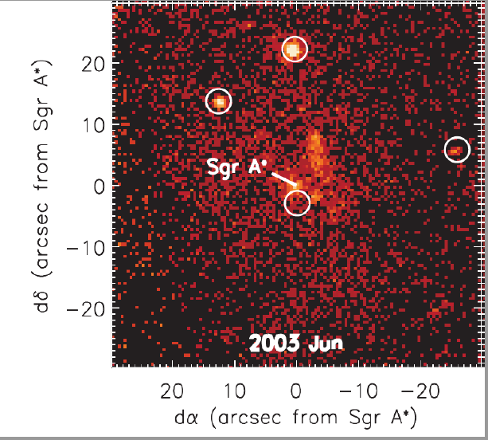
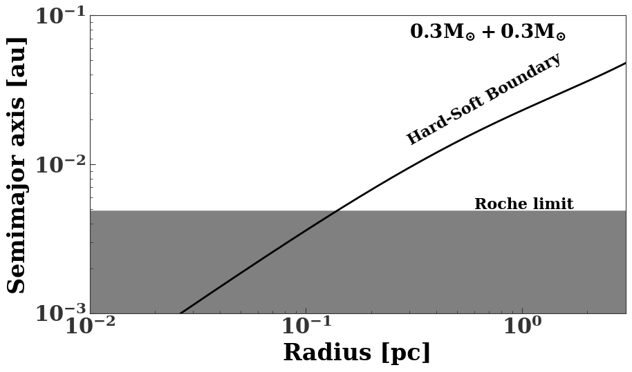
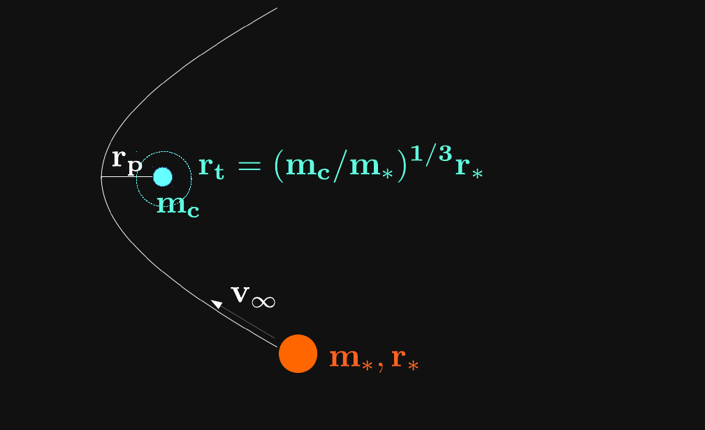
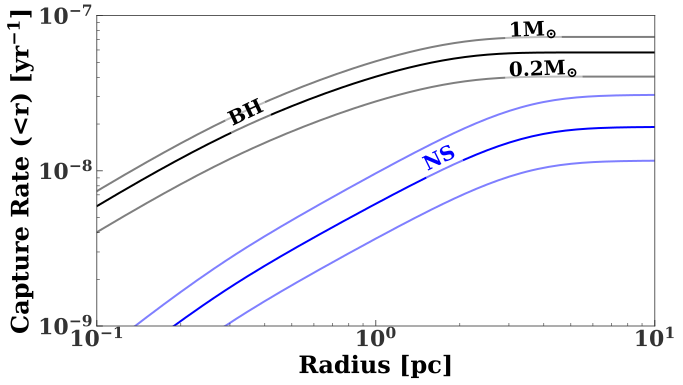
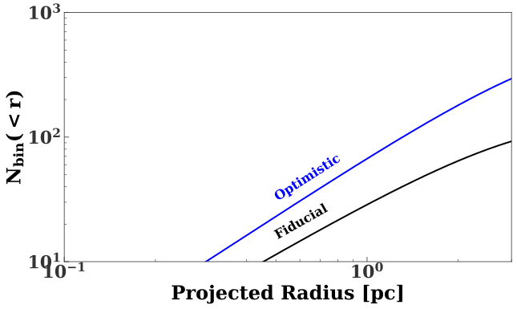

X-ray binaries from Tidal Capture in the Galactic Center
Compact objects in galactic nuclei

X-ray binaries in the central parsec
- Muno+2005, Hailey+Mori2017: 6 transient XRBs in the central pc
- 3 of these are likely BHs (spectra, > 10 year recurrence time)
X-ray binaries in the central parsec
- Hailey+2018 (submitted): 6-12 quiescent black hole XRB candidates in the central pc
- Likely hundreds below detection threshold
Formation
- BH XRBs / $\mathrm{M_*}$ $\sim 10^3$ times field
- Likely not from (normal) binary evolution
- Dynamical formation
- Binary exchange? But most binaries destroyed
- Tidal capture! (Fabian+1975, Press+Teukolsky1977, Lee+Ostriker 1986)
Binary destruction
Galactic center

Models
- Continuous formation of BHs and NSs
- $\dot{N}_{\rm bh}=2 \times 10^{-5}$ $\dot{N}_{\rm ns}=4 \times 10^{-5}$ per year (Optimistic)
- 10 times lower (Fiducial)
Follow two-body relaxation using 1D (energy-space) Fokker-Planck code (PhaseFlow Vasiliev 2017)
Stellar distributions
Tidal capture physics
Tidal capture physics
$r_{\rm p, crit}=1.6 r_t, v_\infty=200 \,\mathrm{km\,\, s^{-1}}$
Survivability
Capture rates
Binary lifetime
BH XRBs
NS XRBs
Summary
$\sim 10^4$ isolated BHs in central parsec
Other works
- SMBH Binaries (Generozov+Haiman 2014)
- Gas around quiescent SMBHs
(Generozov, Stone, and Metzger 2015) - Jetted tidal disruption events
(Generozov, Mimica, et al. 2017) - TDE rates (Stone, Generozov, et al. 2017)